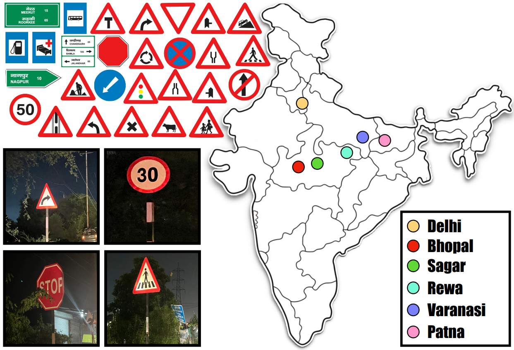

The Indian Night-time Traffic Signboard Dataset
Traffic signboard recognition (TSR) is crucial and has wide range of applications including Advanced Driver Assistance Systems (ADAS), autonomous driving, navigation and smart city infrastructure. However, TSR at night-time and in low-light conditions is difficult due to variety of inherent noises: brightness, motion blur, light glare, occlusion, etc. Also, there do not a exist a public dataset for night-time, to cater this we curated the INTSD, an Indian Nighttime Traffic Sign Dataset and benchmarked it with strong baselines and existing state-of-the-art models.
Overview
The INTSD consists of 6004 night-time images with 14044 instances of signboards spanning over a carefully curated set of 41 classes. The dataset spans across six different districts, includes both rural and urban signboards, and also features different lightening conditions based on the availibilty of street lights and different time of the night. The dataset also consist of four additional classes, which are not present in existing datasets.